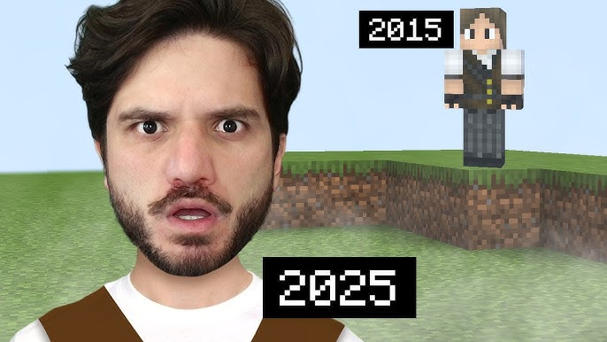

Who is Jazzghost?
Juliano Alvarenga Barros, better known as Jazzghost (born February 27, 1991, in Belo Horizonte, MG), is one of Brazil’s biggest gaming YouTubers with over 20 million subscribers, famous for creative and humorous Minecraft videos; he began his career in 2012, creates content focused on Minecraft (modern constructions and tutorials) as well as other games, runs the main channel “Jazzghost” with more than 20 million followers, is recognized by Brazilian media as a major influencer in the segment, got his name from an in-game adventure combining “Jazz” (his playstyle) and “Ghost,” and is married to Camila, celebrating their union in 2025.
Early Life
From a young age, Jazzghost showed great interest in games and technology. Over time, this passion turned into a successful YouTube career.
Career on YouTube

His channel became popular due to creative challenges, storytelling, and entertaining Minecraft series watched by millions of fans. Over the years, **Jazzghost** built a strong connection with his audience through humor, creativity, and well-produced videos, becoming one of the most recognized Minecraft creators in Brazil and inspiring many young gamers and content creators.
Fun Facts
- 🎮 Loves Minecraft
- 🎥 Creates creative challenges
- 🌎 Millions of subscribers